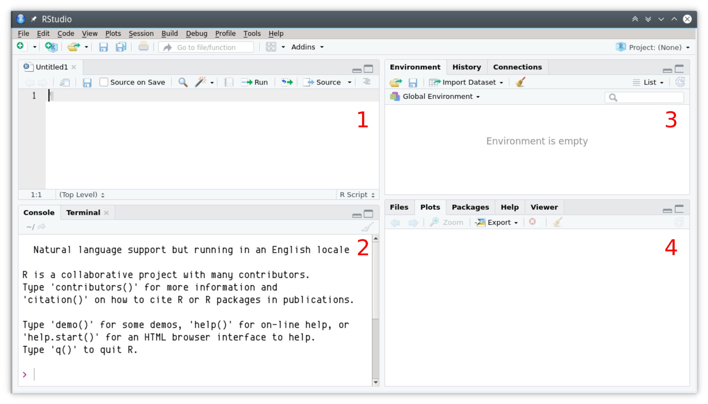

1.3 Primera sesión en RStudio
El entorno de trabajo de RStudio se divide en cuatro paneles: (1) el editor, (2) la consola, (3) entorno, historia de comandos y conexiones y (4) administrador de archivos, gráficos, ayuda y paquetes.
Figure .: Interfase principal de RStudio
- Editor de scripts. Por defecto este panel no aparece a menos que se cree un nuevo script o se abra uno previamente guardado. Es básicamente un editor de texto plano como el block de notas, aunque tiene algunas funcionalidades importantes:
- Resaltado sintaxis: mediante colores resalta las funciones, variables, comandos o palabras claves del lenguaje R
- Sangrado automático: agrega espacios en blanco para mantener la sangría de los bloques de código.
- Completado automático: muestra sugerencias para completar el comando o argumentos usando la tecla
TAB.
Consola. Es donde reside R propiamente dicho. Allí se ejecutan los comandos y se obtienen las salidas de R. El símbolo es
>indica que R está disponible para recibir un comando que ouede ser tipeado directamente, o bien enviado desde el editor de scripts usando la combinaciónCTRL + ENTERoCTRL + R.Environmnet/History. En la primera pestaña se visualizan los objetos (variables, funciones o datos cargados) en el entorno de R. En la segunda se puede ver el historial de comandos ingresados o enviados a la consola
Files/Plots/Packages/Help/Viewer. Allí se puede manejar los archivos del directorio de trabajo, visualizar los gráficos generados en R con posibilidad de exportarlos en varios formatos, administrar los paquetes o complementos, buscar o explorar el manual de ayuda.
1.3.1 Crear un Proyecto
Antes de comenzar es conveniente crear un proyecto dentro de RStudio. Esto permitirá organizar los archivos de datos, las salidas, los scripts, etc., dentro de un directorio de trabajo (working directory) y volver a ellos de manera más rápida y eficiente.
Ir a
File > New project...o bien el íconoNew project.Luego seleccionar
New directoryyEmpty projectUna vez en el cuadro de diálogo
Create new project
En Directory name ingresar el nombre del proyecto (e.g. Diseño2016) que será a su vez el nombre de la carpeta que RStudio va a crear.
Luego en Create project as a subdirectory of vamos indicar donde queremos que Rstudio cree la carpeta.
- Si todo sale bien, se crea la carpeta con el nombre que indicamos y dentro de ésta un archivo con extensión
.Rproj
1.3.2 Modo interactivo: la consola
La línea de comando o consola es el modo interactivo mediante el cual podemos ejecutar comandos directamente en el intérprete de R. El símbolo > indica que R está disponible esperando una orden. Si la orden no está completa el símbolo se transoforma en +. Por ejemplo: 2 + 2
## [1] 4Otro ejemplo: el promedio de los números 1, 3 y 4
## [1] 2.666667El simbolo # indica que lo que sigue es un comentario y por lo tanto debe ignorarse
1.3.3 Creación de un script
El Editor de Scripts (panel 1) es un editor de texto que está conectado con la consola y gracias a algunas funcionalidades facilitan la edición de código
Para crear un nuevo script se puede usar uno de los siguientes métodos:
- Ir a al menu
File > New File > R Script - Usar el atajo de teclado
CTRL + SHIFT + N - Clickear en el primer ícono de la barra de menu

Una vez abierto el script en blanco, se pueden empezar a escribir los comandos de R, por ejemplo:
# Crear un vector con 10 números aleatorios
x <- runif(10, min = 0, max = 10)
# Calcular el promedio de estos números
mean(x)Para ejecutar estos comandos en la consola hay que posicionarse en la línea o seleccionar las líneas que se quieren ejecutar y luego:
- Ir al menu
Code > Run Selected Line(s) - Usar el atajo de teclado
CTRL + ENTERoCTRL + R - Usar el ícono
Runde la barra de herramientas de la pestaña del script
Para guardar el script:
- Ir al menu
File > Save - Usar el atajo de teclado
CTRL + S - Usar el ícono con el diskette de la barra de herramientas global o de la pestaña del script activo.